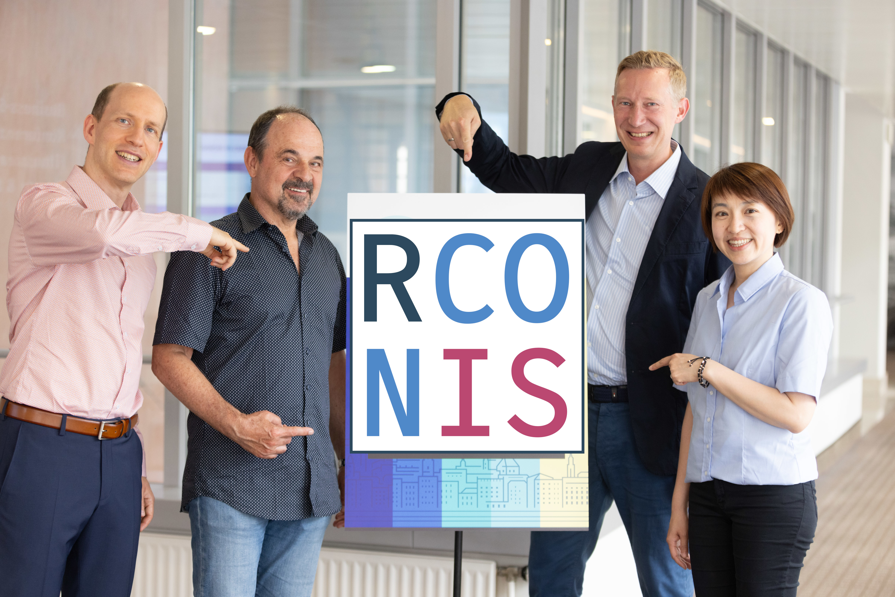
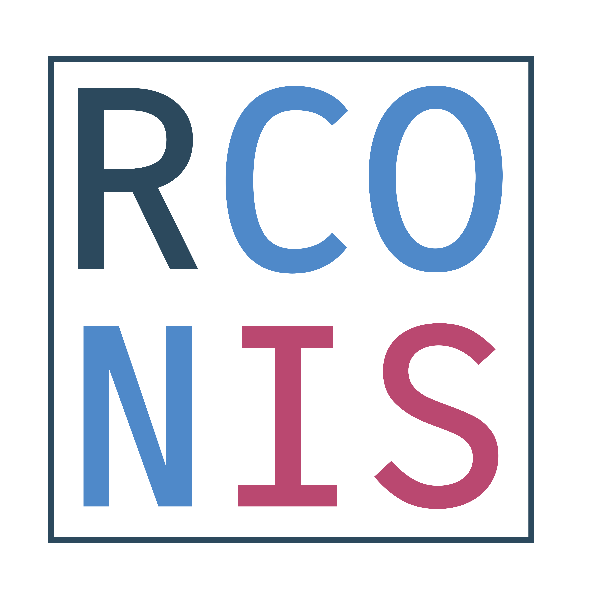

Software Engineering Topics
Merck & Co., Inc., August 2024
RCONIS
Agenda
- Personal introduction
- Defensive programming
- Code optimization
- Shiny development
- Using LLMs
Personal introduction
Daniel

- Ph.D. in Statistics from University of Zurich, Bayesian Model Selection
- Biostatistician at Roche for 5 years, Data Scientist at Google for 2 years, Statistical Software Engineer at Roche for 4 years
- Co-founder of RCONIS - we just had our 1st birthday!
- Multiple R packages on CRAN and Bioconductor, co-wrote book on Likelihood and Bayesian Inference, chair of
openstatsware - Feel free to connect
RCONIS
Idea
- Grow RPACT company to offer a wider range of services
- Strengthen maintainer team for the
rpactpackage - Team growth combined with scope growth
- Statistical consulting and engineering services:
Research Consulting and Innovative Solutions - Website: rconis.com
Defensive programming
Type assertions
- Recommendation: Enforce types and other expected properties of function arguments with assertions.
- Reason: A good proportion of production bugs in the context of larger team collaborations originate from under-defined types or invalid inputs.
- Assertions give an early and readable error message to the user instead of failing function code downstream in a less explicable way.
- Main reason is of course that R is not a strongly typed language, so we need to enforce types ourselves.
Type assertions: packages
assertthat: simple assertions, e.g.assert_that(is.numeric(x))- part of the
tidyverseand written by Hadley Wickham - last CRAN update was 2019, so is not actively maintained
- part of the
checkmate: more powerful assertions, e.g.assert_numeric(x, lower = 0, upper = 1)- very fast due to underlying C implementation
- easy to extend with custom assertions
- also has the
expect_*verbs for extendingtestthatfunctionality - little disadvantage: does not easily allow custom error messages
- see vignette for details
- has been my personal choice for a few years now
Type assertions: packages (cont’d)
- In Python:
Pydantichelps verify input data coming into fully type annotated Python programs.
Type documentation
Going hand in hand with type assertions is type documentation.
Recommendation: Use consistent type hints or types in the
roxygen2documentation to explain to the user which argument of the function expects which type of input.Simple example (formatting can be tuned to personal preference):
Is shorter and more consistent than:
Type documentation (cont’d)
- In addition to standard types like
numeric,character,integer, etc. - You can also use more complex types like
data.frame,list, and custom package classes. - Plus I recommend to use
number(scalar numeric),string(scalar character),flag(scalar logical), etc. because these have correspondingcheckmateassertions, e.g.assert_number(x)
Type documentation with roxytypes
Provides typed parameter documentation tags for integration with
roxygen2.Typed parameter tags provide a consistent interface for annotating expected types for parameters and returned values.
Example:
Output format in the
.mdfile can be configured centrally in theDESCRIPTIONfile, e.g.:
Config/roxytypes: list(format = "(`{type}`)\cr {description}")Conversion utility to convert existing
roxygen2documentation to typed parameter tags.
Error handling
- Recommendation: Use
tryCatch()sparsely only, and only for specific expected errors.- Example:
- Otherwise debugging becomes more difficult
- I found myself manually disabling such statements via
fixInNamespace()to be able to debug the code successfully
- I found myself manually disabling such statements via
Error handling (cont’d)
- Basic
stop()andwarning()functions are sufficient for most use cases - Use
message()very sparingly, as usually R packages should not be too verbose during normal operation
Corresponding tests
Recommendation: Write tests for error and warning handling, but not for type assertions.
Use specific enough expectations to ensure that the correct error or warning is thrown.
Example:
Type assertions are evaluated in every function call, and should be code reviewed in combination with their documentation. Testing them separately would cause too much overhead.
Code optimization
Please see here
Shiny development
Please see here
Using LLMs
What LLMs did I use so far
- ChatGPT (OpenAI) for general purpose tasks
- travel planning
- understanding legal terms
- deciphering linker symbols in C code
- GitHub Co-Pilot (Microsoft) mostly in VScode
- now mostly with Claude Sonnet 3.7 (Anthropic)
- tab-completion in Quarto docs and R or C++
- pointer Q&A (“Ask Copilot”)
- chat window for more general questions
- Google Search results via Gemini
Where I found LLMs useful
- Applied statistical analyses reports
- Read data, summarize hypotheses, fit models, generate
ggplot2plots, write conclusion - Important: Write what you think into your Quarto doc, only then the LLM has a chance to understand the context and help you best
- Read data, summarize hypotheses, fit models, generate
- Very precise code generation, e.g. “I have this string and want to deparse it into … please give me the function code”
- Image recognition from math formula screenshots to generate LaTeX code
- GitHub Co-Pilot code review to find small problems incl. typos
- Generate
roxygen2documentation from function code (here also assertions help to guess the type for documentation)
Where I was disappointed by LLMs
- Translating code from one language to another
- e.g. R to Julia
- Anything that requires logic or math skills
- e.g. find the inverse of a function
- Writing tests for existing code
- Generating slides or posters
- Finding literature references
Good news: We are still needed!
- Statisticians and software engineers cannot be replaced by LLMs
- High level context and communication with other team members
- Both in the clinical trial space but also for the code base
- Logical and analytical skills which LLMs just do not have
- Can in turn leverage LLMs for routine tasks to be more productive
Thank you! Questions?

These slides are at danielinteractive.github.io/merck-eng
Software Engineering Topics | License